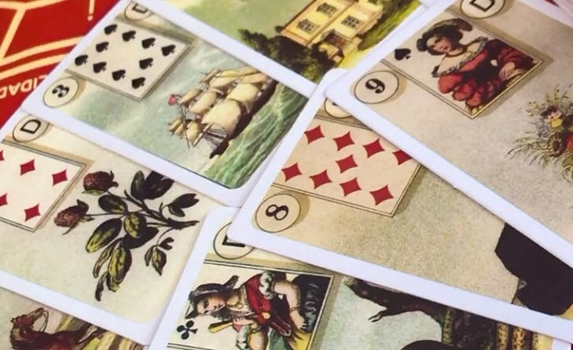

A Síbila Italiana é um oráculo com 52 cartas que trazem cenas do cotidiano,
focando principalmente emoções, relações e eventos práticos.
Suas cartas são diretas, expressivas e objetivas, oferecendo orientações para
questões pessoais e situações concretas.